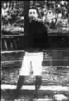

红色殉道者——珍藏在子女记忆中的瞿秋白、方志敏、刘伯坚
●贾 永 曹国强 白瑞雪
他们没有参加长征，但他们的死都与长征有关。
他们没有分享到长征胜利的喜悦，更没有盼来他们曾描绘过无数次的美丽的新中国。
然而，每当我们唱起《国际歌》，每当我们读到《可爱的中国》和《带镣行》，总会想起那些永远年轻的名字：瞿秋白、方志敏、刘伯坚。
瞿秋白－－唱着自己翻译的《国际歌》走上刑场
分别5年，当父亲的面容再次出现在眼前，竟是绝照。
1935年的一个夏日，正在乌克兰参加夏令营的瞿独伊，从同学手中抢过了一张《真理报》，上面赫然登着父亲的照片，再一看，竟是父亲牺牲的消息。
瞿独伊哭得休克过去。她的“好爸爸”从此没有了。
从女儿记事的那天起，母亲杨之华就让独伊在对瞿秋白的称呼前面加上个“好”字，虽然秋白并不是她的生父。
将自己和爱人合誉为“秋之白华”的瞿秋白，像珍爱他们的爱情一样，爱着这唯一的女儿。
1928年，中国共产党第六次代表大会在苏联召开前夕，瞿秋白一家来到了莫斯科。此后的两年间，父母在共产国际上班，瞿独伊则先后被送入孤儿院、森林学校和儿童院。
与“好爸爸”并不多的相聚，在独伊的童年留下了清晰的印记：野花烂漫的季节，父亲带她到树林里采花，把花瓣夹在书里作书签；大雪中，父亲带着她去莫斯科郊外滑雪，还不时假装摔跤，逗得女儿咯咯地笑；每次来孤儿院探望女儿，父亲总要带来她最爱吃的牛奶渣……
1930年，瞿秋白夫妇秘密回国。临行前，他们对女儿说，爸爸妈妈有事要去南俄，很快就回来。
善意的谎言让匆忙的分别更加匆忙。独伊没能与父亲再见上一面，三口之家的团圆，从此不再。
直到40多年后，瞿独伊才从当年见证人的回忆中还原了父亲生命的最后片段——
1935年2月，中央苏区陷落前夕，瞿秋白在向闽西突围的途中被俘。起初，他自称是医生，并寄信给上海的鲁迅希望设法保释，不料因叛徒出卖而暴露了真实身份。
这年6月18日清晨，福建长汀罗汉岭下白露苍茫。36岁的瞿秋白走到一处绿草坪盘腿坐下，向刽子手微笑说：“此地甚好。”尔后唱着自己于1923年翻译成中文的《国际歌》就义。
儿时的独伊并不知道，父亲20岁时就患上了严重的肺病。
如果不是因为患病而无力奔跑，瞿秋白也许能够冲出敌人的包围圈；如果不是因为患病而给了“左”倾领导借口，他也许能够同红色大军一起走上艰险重重却又充满希望的长征路。
1934年秋，中央红军在仓促中决定进行战略转移，被王明等人解除中央政治局委员职务已两年之久的瞿秋白奉命留守江西。
瞿秋白放下整好的行装，举起一年前在上海与杨之华分别时妻子送给他的酒杯，同李富春、蔡畅夫妇等默默话别。中央红军出发那天，他把自己的良马交给了长征队伍中最年长的徐特立。
这时的中央苏区正面临着继5次“围剿”之后更为猛烈的风雨，对于身体虚弱的瞿秋白而言，留下，几乎意味着死亡。但当第二天，陈毅派马要他去追长征队伍时，他说：“我服从组织的命令。”
通缉了11年的瞿秋白终于“落网”，这对国民党无疑是个天大的喜讯。
囚禁他的国民党师长宋希濂前来劝降。面对这个自己昔日在上海大学教书时的学生，瞿秋白把与宋希濂的谈话变成了一次关于共产主义在中国是否行得通的辩论，而辩论最终以后者的无言以对收场。
就在行刑前5天，国民党还继续派员游说。他们似乎颇为照顾瞿秋白的面子：不必发表反共声明和自首书，只要答应到南京政府下属机构去担任翻译即可。
拒绝，还是拒绝。瞿秋白说：“人爱自己的历史，比鸟爱自己的翅膀更厉害，请勿撕破我的历史！”
或许，枪声响时，共产党人和知识分子的骨气所扬之处，正是秋白的内心所归！
瞿秋白被捕的消息登报后，把他引为知己的鲁迅木然呆坐，低头不语。几个月后，鲁迅抱病将秋白译著编纂成集。
抗战爆发后，有人向毛泽东讲述了瞿秋白殉难的情形。毛泽东说，如果他不牺牲，现在来领导延安的文艺工作多好。
女儿瞿独伊，则用了长长的几十年来弥合失去“好爸爸”的伤痛。
1984年9月，俄文名意为“柏树”的她，在罗汉岭栽下了一棵柏树。
20多年又过去了，秋白就义处松涛阵阵，翠柏成林。
方志敏－－为了可爱的中国
方梅第一次读到父亲的《可爱的中国》时，已经为人妻母了。
方梅从小就知道，自己的父亲是个了不起的人。
祖母告诉她，父亲清秀、英俊，儿时曾被村人叫作“正宫娘娘”。养父母告诉她，父亲善于演讲，他一讲话，大家围过来听上半天也不嫌累。乡亲们告诉她，父亲骑白马、挎双枪，威风凛凛。
很多年里，在各种说法中拼凑父亲形象的方梅根本不相信父亲已经牺牲了。
天天盼着父亲回来的方梅，出生在敌人疯狂围剿苏区的1932年冬。母亲缪敏在转移途中自己扯断脐带，然后把这个哭声像小猫一样的女孩送给了当地的老百姓。
方志敏的5个孩子寄养在各处，分别叫松、柏、竹、梅、兰——那是他最爱的一副对联：“心有三爱，奇书骏马佳山水；园栽四物，青松翠竹白梅兰。”
1934年11月，在中央红军主力长征后，时任中国工农红军北上抗日先遣队军政委员会主席的方志敏告别妻儿，告别他亲手创建的闽浙赣苏区，率红十军团踏上北上之路。
同样的“北上”，不同的路线。如果说主力红军面临的是一次前途未卜的远征，那么担负牵制敌人兵力、掩护主力转移任务的红十军团，注定是支死亡军团！
在20倍于己的国民党重兵围追堵截下，部队屡屡受创。1935年1月，红十军团退至赣东北边缘，决定进入苏区休整，不料敌人早已在此设下了封锁线。
方志敏和军团参谋长粟裕带领800多人率先冲出封锁线，但大部队还陷在敌人的包围圈里。在他召集的最后一次军政会议上，方志敏说，我是部队的主要负责人，不能先走。遂调转马头，复入重围。后在与2000将士苦守怀玉山时，在大雪中不幸被俘。
落入敌手的方志敏，以另一种方式继续战斗。
发现他的两个国民党士兵连一个铜板也没有搜到，他们不相信这样的“大官”会没有钱。“我们革命不是为了发财！”方志敏怒斥道，“清贫、洁白朴素的生活，正是我们革命者能够战胜许多困难的地方！”
美联社记者这样记录国民党“庆祝生擒方志敏大会”的场景：“戴着脚镣、手铐站立在铁甲车上的方志敏，其态度之激昂，让观众无限敬仰。即使蒋介石参谋部之军官亦莫不如此。”
在狱中，方志敏争取到了同情革命的胡逸民、高易鹏等人以及看守所代理所长凌凤梧。前者辗转4次从狱中送出了方志敏的手稿，后者则把他脚上10斤的镣铐换为3斤半。
正是这副镣铐，20年后成了寻找方志敏遗骸的重要线索。
1955年，在方志敏就义的南昌市下沙窝，施工人员发现了很多骨头、一副棺木和一副镣铐。经凌凤梧等人辨认，镣铐和棺木正是方志敏受到的特殊“待遇”。经血样对比之后，9块遗骨被认定为方志敏的遗骸。
又过了22年，烈士遗骸隆重安葬于南昌市郊梅岭。方梅记得，那一天先是细雨蒙蒙，尔后碧空如洗，当灵车经过市区时，街道两边站满了送行的百姓……
妻子缪敏却没能等到这一天。就在安葬仪式举行的前一个月，这位曾与丈夫并肩战斗的革命者匆匆辞世。
她名字里的“敏”字，是方志敏送她的订婚信物。结婚那天，方志敏给妻子取化名“李详贞”，与自己直到被捕时还在使用的化名“李详松”又是天成的一对。
丈夫被捕后不久，缪敏也落入敌人魔掌，被囚禁于与方志敏一墙之隔的南昌女子监狱。
两年后，缪敏被党组织保释出狱。曾经近在咫尺的相隔，终成生与死的距离。
母亲渐渐年老，方梅才懂得了那种刻骨的思念。性格倔强、“一不对就会掏枪出来”的母亲，一提到父亲就泪流不止。结婚时父亲送的一支“英雄”牌钢笔，母亲一直用到70年代，笔头磨得溜光。而那封父亲在狱中写给母亲、后来在颠沛流离中遗失的信，母亲后半生一直在寻找。
母女俩解放后才相见，那时，17岁的方梅已经为人妻母。与被母亲带到延安、后来上大学并留苏的两个哥哥方明、方英相比，在农村长大的方梅吃了太多的苦，缪敏想要弥补这份遗憾。
她把女儿锁在屋里，逼着她读书。这时，方梅第一次读到了父亲的《可爱的中国》。“母亲！美丽的母亲，可爱的母亲！”一遍遍朗诵着这些直抒胸臆的句子，才识字不久的方梅欢呼起来：从此我可以讲我的家史了，从此我懂得“祖国”的含义了——祖国，就是生养了我们、值得像父亲那样的千千万万烈士用生命去保护的母亲！
毛泽东欣赏方志敏靠“两条半枪”打出了两个红十军的才能，称赞在敌人数年围剿中屹立不倒的闽浙赣苏区是“方志敏式根据地”。
蒋介石同样看重方志敏。得知抓住了方志敏的消息后，蒋介石亲自出面劝降并许以江西省主席之职，但得到的答复只有简单的一句话：“你赶紧下命令执行吧。”
一代英才不能为己所用，蒋介石下令秘密处决。
1935年8月6日，距方志敏的37岁生日仅半个月。被押解至刑场的方志敏在赣江边站了几分钟，然后转身说：“来吧！”
秋风吹动着方志敏的头发。
父亲想了些什么呢？方梅说：“那几分钟里的思绪，我大概一生也理不透了。”
刘伯坚－－带镣长街行，蹒跚复蹒跚……我心无愧怍
刘豹一直把父亲遗书拍成的照片带在身边。
“带镣长街行，蹒跚复蹒跚，市人争瞩目，我心无愧作……”1934年3月11日，被敌人押解转狱的刘伯坚，就这样拖着重重的镣铐，蹒跚着走过江西大庾人潮涌动的青菜街。
敌人企图用羞辱的方式摧毁刘伯坚的意志，却让内心坦荡的革命者写出了不朽的《带镣行》。
刘豹读到这首诗的时候，已经是20多岁的小伙子了。1949 年，挥师江西的解放军来到了瑞金农村。从他们口中第一次听到“刘伯坚”这个名字之前，被养父母取名“邹发生”的刘豹一直以为自己是个捡来的“野孩子”。
事实上，他是留在父亲身边时间最长的一个孩子。
红军主力长征后，蒋介石调集十几万大军包围了中央苏区，根据地所有县城先后失守。1935 年3月，时任赣南军区政治部主任的刘伯坚率部准备突围，挑在箩筐里随部队行军的孩子不能再留了，只好送给一家船户。
从江西到北京，对一切都懵懵懂懂的刘豹几乎来不及细想“父亲”“牺牲”这样的词语究竟是什么意思。他只记住了在南昌第一次见到的电灯，以及大高个的他走进华北小学一年级课堂时全班哄堂大笑的情景。
慢慢地，被北京的叔叔伯伯们喊作“豹子”的刘豹学会了写自己的名字。外表儒雅的刘伯坚为3个儿子分别取名虎、豹、熊，无不透着股虎虎生气。
刘伯坚生于四川，25岁时赴欧洲勤工俭学并组织“中国少年共产党”，先后在苏联学习政治、军事，回国后到冯玉祥的西北军任政治部部长。他最后的足迹，留在了刘家的祖籍地——江西。
就在送出孩子后几天，刘伯坚向赣南油山突围时重伤被俘。
像对待其他共产党领导人一样，敌人使尽了软的硬的手段。但刘伯坚早就抱定了牺牲的决心，他在信中说：“生是为中国，死是为中国，一切听之而已。”
行刑那天，刘伯坚给妻子写了最后一封信。“你不要伤心，望你无论如何要为中国革命努力……并要用尽一切的力量，教养虎、豹、熊三幼儿成人……”半个多世纪过去，字迹依然清晰，落款中的拼音签名“LIU”依然洒脱。
时时回响在刘豹耳边的，却是那最后一句：“12时快到了，就要上杀场，不能再写了。”
一句话，填满了刘豹断裂20 多年的有关父亲的记忆——一边是森严的杀场，一边是从容的留墨，我的父亲在走向敌人的屠刀时，是怎样的凛然与镇定啊！
刘伯坚至死也不知道，他的妻子再也看不到这封信了。几乎是在他牺牲的同时，担任中华苏维埃共和国临时中央政府秘书、机要科科长的王叔振，被害于闽西长汀。
王叔振与丈夫留给孩子的话如出一辙：“今送给黄家抚养成长，长大在黄家承先启后……父母深恩不可忘，仍要继续我等志愿，为革命效力，争取更大光荣。”
但母亲还心存重逢的希望，她把“承先启后”4个大字撕为两半，一半随自己带走，作为日后相认的凭据。
1979年，在三弟熊生家里目睹那永远无法完整的一页时，第一次聚首的刘虎生、刘豹、刘熊生三兄弟抱头痛哭。虎生在父母牺牲后被亲戚送到延安，后曾留学苏联；熊生则一直在母亲当年送出他的山村里平静地生活。如今，他们已先后辞世，剩下年过七旬的刘豹孤独地守着父母留下的往事。
刘伯坚牺牲的1935年3月21日，中央红军正在第4次渡过赤水河。
险象丛生的红军从此绝地逢生，刘伯坚却倒在了生命的终点。
(范士超摘自《中国青年报》2006年10月17日，本刊有删节)